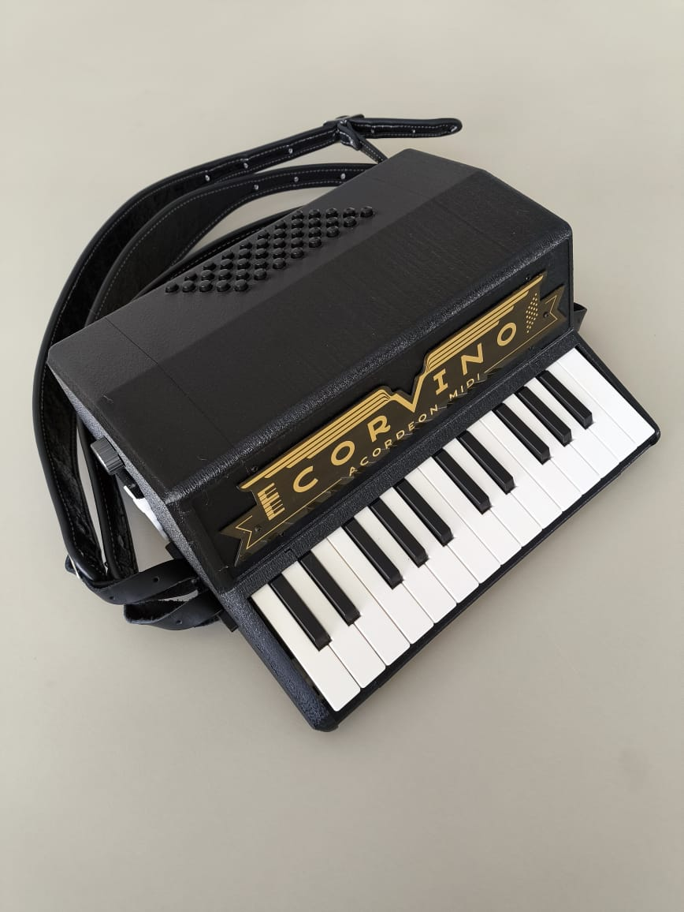

Manual do Corvino RC2
Referência completa dos controles do painel · ~6 minutos


Antes de tudo — a chave de liga/desliga
O RC2 tem bateria interna (pra funcionar sem cabo via Bluetooth), então tem uma chavinha física de liga/desliga. Sem ela ligada, o Corvino fica apagado mesmo com o cabo USB conectado.
Vire a chavinha para cima — o display acende e mostra o volume atual. Pra desligar ao final do estudo, vire pra baixo (economiza bateria se for usar sem cabo depois).
Os controles, um por um
Um encoder giratório 360° sem limite.
No curso, esse knob não é usado. O volume, os timbres e o transpose você ajusta pelos controles do próprio app Corvino (na tela).
💡 Girar o knob só envia comandos MIDI (CC) — isso tem função em softwares avançados (DAWs como FL Studio, Ableton), onde você pode mapeá-lo pra qualquer parâmetro. Pro curso, pode ignorar.
Mostra o valor interno do encoder (0 a 127) por padrão, e o valor do parâmetro que você está editando quando aperta outros botões. Exemplos:
- 127 (ou outro valor 0–127): valor atual do knob (é um número MIDI, não é o volume real do app do curso).
- -5, -4, 0, +4, +5: número de oitavas ou semitons acima/abaixo do padrão, ao apertar OC± ou o combo de transpose.
💡 O display desliga sozinho depois de alguns segundos sem mexer. Toque qualquer botão pra reacender.
Dois botões que deslizam a afinação da nota:
- PITCH -: afina pra baixo enquanto você segura
- PITCH +: afina pra cima enquanto você segura
Solta, a afinação volta sozinha. Mesma ideia da alavanca whammy de guitarra — use pontual pra dar emoção em notas longas, como no final de uma frase.
Liga um vibrato (ondulação da afinação) nas notas tocadas. Aperte uma vez pra ligar; aperte de novo pra desligar. Útil em acordes longos pra dar respiração ao som.
Funciona como o pedal de piano: enquanto SUS está aceso, todas as notas que você tocar continuam soando mesmo depois de soltar a tecla. Aperte SUS de novo pra desligar.
Você segura um acorde no teclado, e o Corvino toca as notas desse acorde automaticamente em sequência, criando um arpejo rítmico.
Modo "escala inteligente": você escolhe uma escala (Dó maior, Lá menor, Blues, etc) e o teclado passa a tocar apenas notas dessa escala — não tem como errar uma nota "fora".
Muda a faixa de notas do teclado sem você trocar de tecla. Cada toque em OC+ sobe uma oitava. Cada toque em OC- desce uma oitava. O display mostra o número atual (-3, -2, -1, 0, +1, +2, +3).
Pressione OC- e OC+ juntos pra voltar direto pra oitava padrão (display mostra 0).
O BT existe pra uso avançado: conectar só o teclado MIDI do Corvino a um celular, tablet ou DAW sem fio. Serve pra improvisar melodia, gravar linhas de teclado em estúdio, ou tocar em um app de piano no tablet.
Como parear (uso avançado):
- Ligue o Bluetooth do celular/tablet/computador.
- No Corvino, segure o botão BT por 2 segundos até o display piscar.
- No dispositivo, na lista de Bluetooth, escolha SMK-25 (ou nome similar).
- Pronto — o teclado já transmite sem fio. Baixo continua pelo USB (ou desconectado, se você só for usar o teclado).
Conectando ao computador
No curso (e no app Corvino em geral), use sempre o cabo USB tipo C. Liga direto no computador, sem driver, sem atraso perceptível, e transmite as duas mãos — teclado e baixo.
Teste rápido: o app Corvino já está aberto nesta página. Se aparecer um ponto verde na marca "MIDI" (lateral esquerda do app, mais ao centro), tá conectado.
Problemas comuns
"Não sai som / nada acende"
- A chavinha de liga/desliga está pra cima? É a causa mais comum de "RC2 não liga com o cabo".
- O display acende? Se não, troque o cabo USB.
- No app do curso, aparece ponto verde em MIDI? Se não, desconecte e reconecte.
- Gire o knob pra direita pra subir o volume — o display deve mostrar o valor subir.
- Confira o Mixer de Volume do Windows — o app Corvino pode estar mudo.
"Teclas tocam no tom errado / só algumas notas"
- SC/CH aceso? Aperte pra desligar — está travando nas notas de uma escala.
- ARP aceso? Aperte pra desligar — está arpejando o acorde.
- Verifique o display — se mostrar um valor de oitava diferente de 0, pressione OC- e OC+ juntos pra resetar.
"Notas seguem tocando depois de soltar"
- SUS aceso? Aperte pra desligar.